Checking normality and outliers
Source:vignettes/articles/EXPLORE_ASSUMPTIONS.rmd
EXPLORE_ASSUMPTIONS.rmdDescription
This shows the output of functions from the package rwf for checking the normality assumption and finding outliers. The functions draw normality diagnostic plots (histogram, density, boxplot, Q-Q plot), run a battery of eight normality tests, flag outliers with three detection rules, report the percentage of extreme z-scores, and replace outliers with missing values. Each section gives the formulas the function uses.
Installation instructions for rwf can be found here
The code can be found here
Data
Three simulated variables with 300 cases each: one normal, one right-skewed (exponential) and one with heavy tails (t distribution with 3 degrees of freedom). Five missing values are added to the normal variable.
set.seed(1)
df <- data.frame(normal = rnorm(300, mean = 50, sd = 10),
skewed = rexp(300, rate = 0.1),
heavy_tails = 50 + 10 * rt(300, df = 3))
df$normal[sample(300, 5)] <- NA
head(df)## normal skewed heavy_tails
## 1 NA 6.2850350 33.31939
## 2 51.83643 1.0222607 43.23947
## 3 41.64371 2.4303513 27.45275
## 4 65.95281 0.7392298 56.85755
## 5 53.29508 10.7779558 54.86836
## 6 41.79532 0.6612121 43.73194Notation
x_1,\dots,x_n are the non-missing values of a variable and x_{(1)}\le\dots\le x_{(n)} the same values sorted. \bar{x} is the mean, s the sample standard deviation, M the median and z_i=(x_i-\bar{x})/s the z-scores. Q_p is the p quantile (R’s default, type 7), Q_1=Q_{0.25}, Q_3=Q_{0.75} and IQR=Q_3-Q_1. \Phi and \varphi are the standard normal distribution and density functions and \Phi^{-1} the normal quantile function. F_n(x)=\frac{1}{n}\sum_{i=1}^{n}\mathbf{1}[x_i\le x] is the empirical distribution function.
plot_normality_diagnostics
Draws four base-graphics panels for each numeric variable: histogram,
density, boxplot and Q-Q plot. Variables with 2 or fewer values or zero
variance are skipped. With file, the panels are also saved
to a PDF.
Histogram. With the default
breaks = "Sturges" the number of classes is (Sturges,
1926):
k=\left\lceil\log_2 n+1\right\rceil
Density. A Gaussian kernel density estimate with Silverman’s rule-of-thumb bandwidth (Silverman, 1986):
\hat{f}(x)=\frac{1}{nh}\sum_{i=1}^{n}\varphi\left(\frac{x-x_i}{h}\right),\qquad h=0.9\min\left\{s,\ \frac{IQR}{1.34}\right\}n^{-1/5}
Boxplot. The box runs from the lower hinge H_L to the upper hinge H_U (Tukey’s hinges, close to Q_1 and Q_3) with a line at the median; the whiskers reach the most extreme values inside the fences and values outside are drawn as points (Tukey, 1977):
\left[H_L-1.5\,(H_U-H_L),\ \ H_U+1.5\,(H_U-H_L)\right]
Q-Q plot. Each sorted value is plotted against the normal quantile of its plotting position (Wilk & Gnanadesikan, 1968), and the reference line passes through the first and third quartiles:
\left(\Phi^{-1}(p_i),\ x_{(i)}\right),\qquad p_i=\frac{i-a}{n+1-2a},\qquad a=\begin{cases}3/8 & n\le10\\ 1/2 & n>10\end{cases}
\text{slope}=\frac{Q_3-Q_1}{\Phi^{-1}(0.75)-\Phi^{-1}(0.25)},\qquad \text{intercept}=Q_1-\text{slope}\cdot\Phi^{-1}(0.25)
Points close to the line mean the data are close to normal; a curve means skew and an S shape means heavier or lighter tails than normal.
plot_normality_diagnostics(df = df, title = "Simulated data")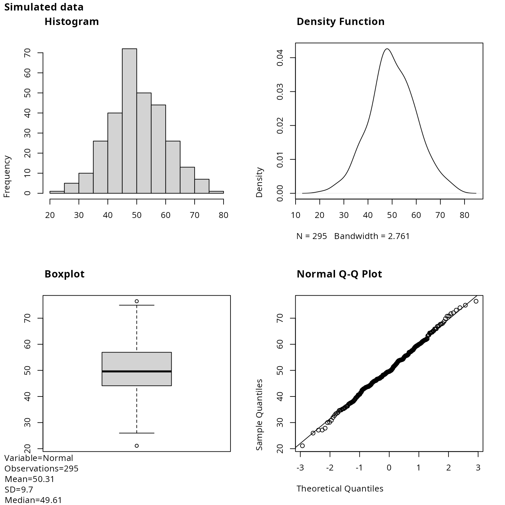
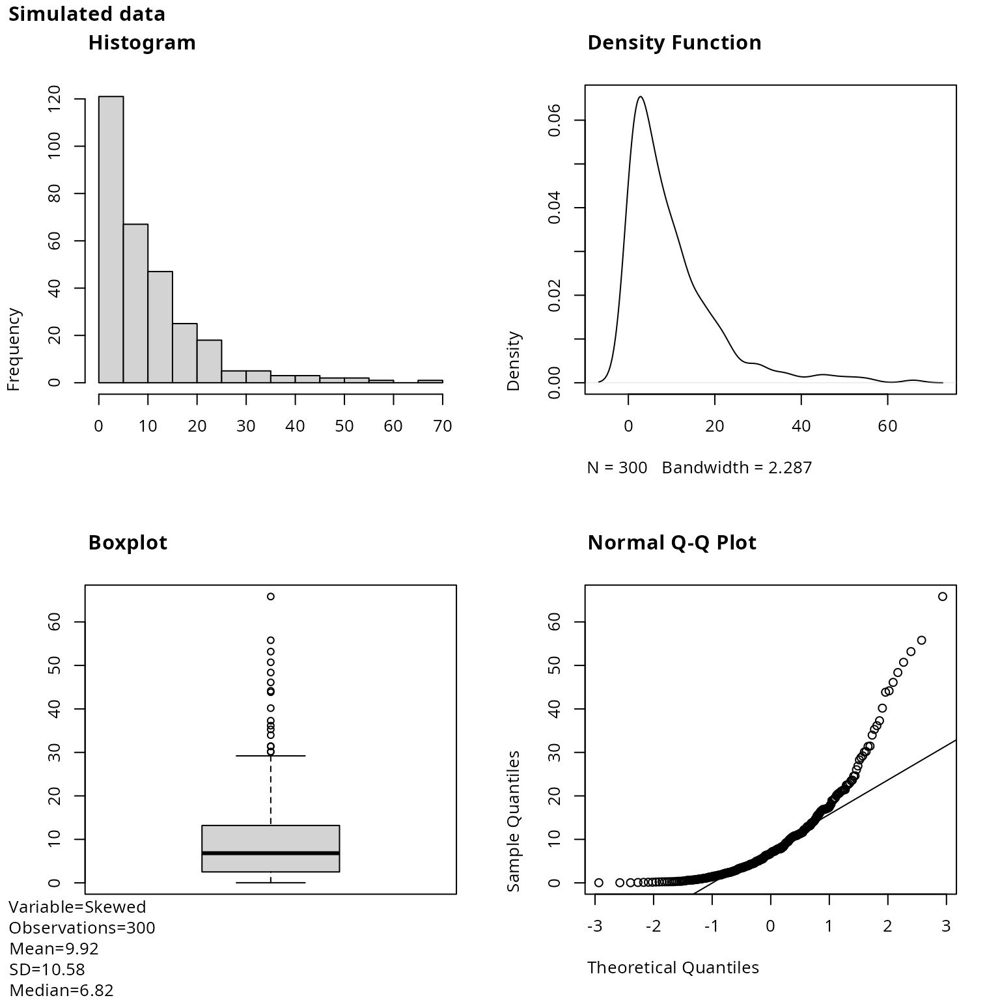
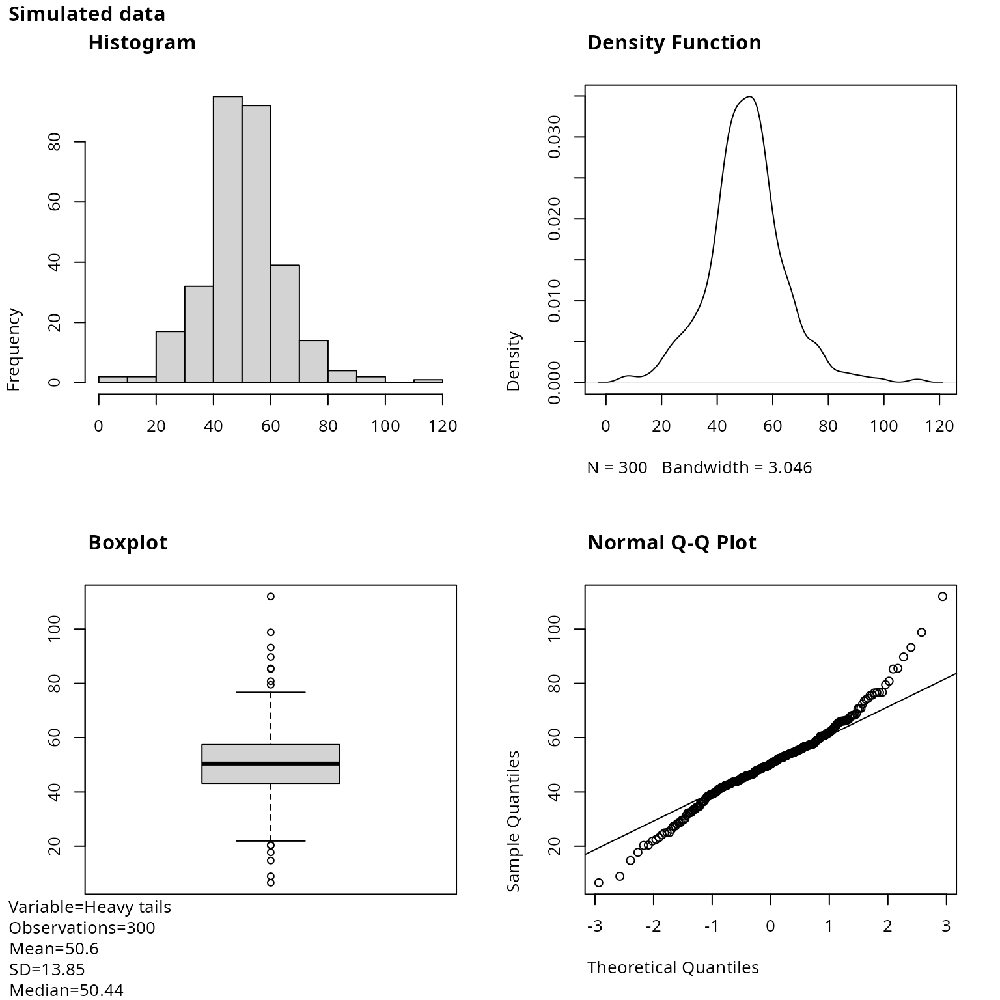
plot_histogram
One ggplot2 histogram per numeric variable, with the
number of observations, mean, SD and median in the caption.
bins equal-width bins cover the range of the data;
ggplot2 centres the first and last bins on the minimum and
maximum, so the bin width is:
w=\frac{x_{(n)}-x_{(1)}}{\text{bins}-1}
invisible(plot_multiplot(plotlist = plot_histogram(df = df, bins = 30), cols = 3))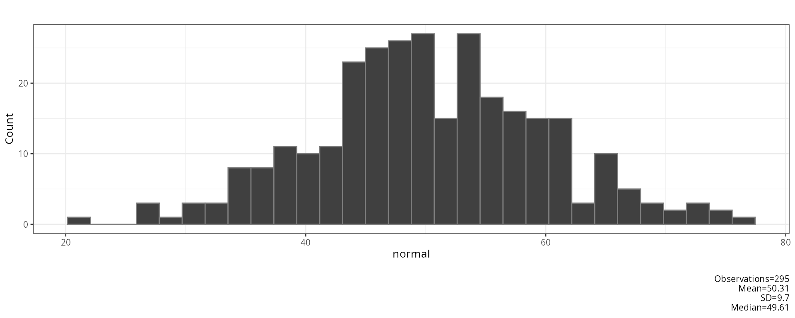
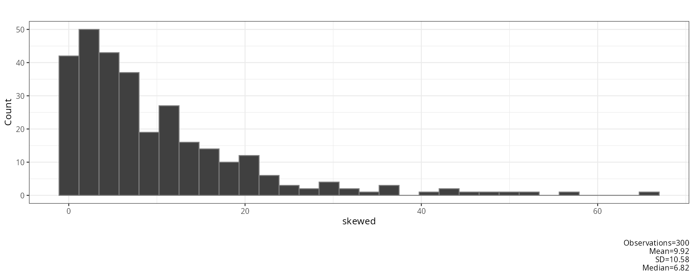
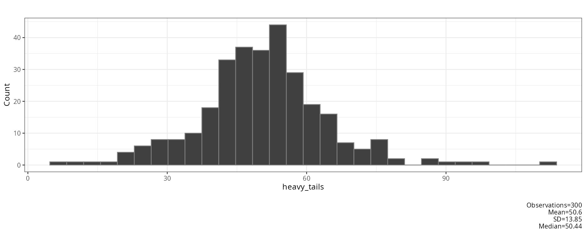
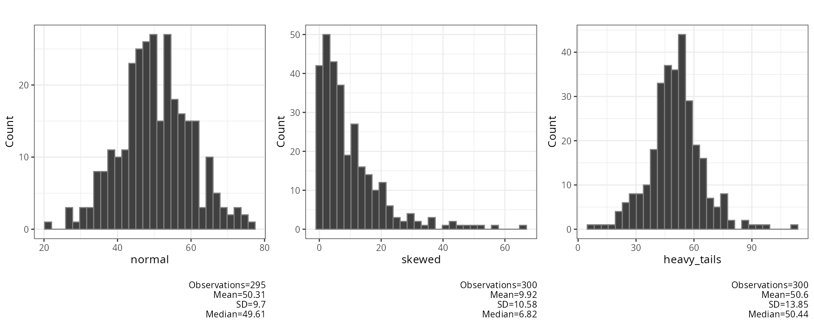
xlims fixes the x-axis range, fill and
color set the bar colours:
plot_histogram(df = df$skewed, bins = 20, xlims = c(0, 60), fill = "steelblue", color = "white")[[1]]
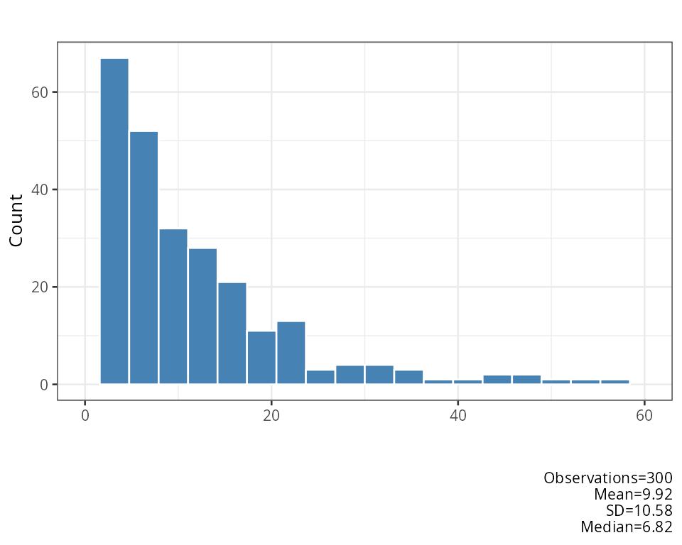
plot_qq
One ggplot2 Q-Q plot per numeric variable, with the same
plotting positions p_i and quartile
reference line as in plot_normality_diagnostics.
invisible(plot_multiplot(plotlist = plot_qq(df = df[, c("skewed", "heavy_tails")]), cols = 2))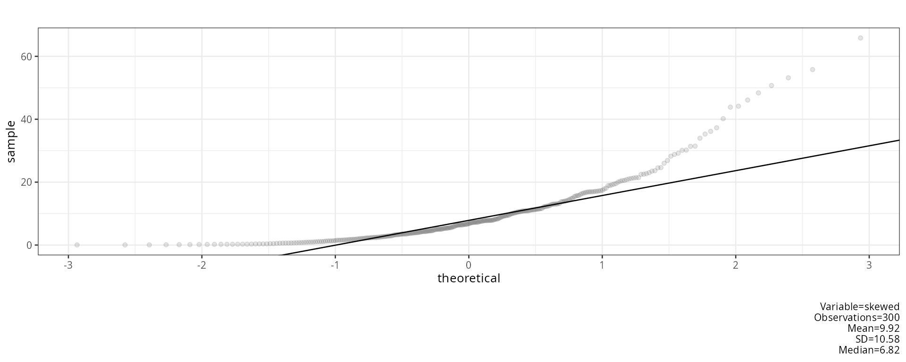
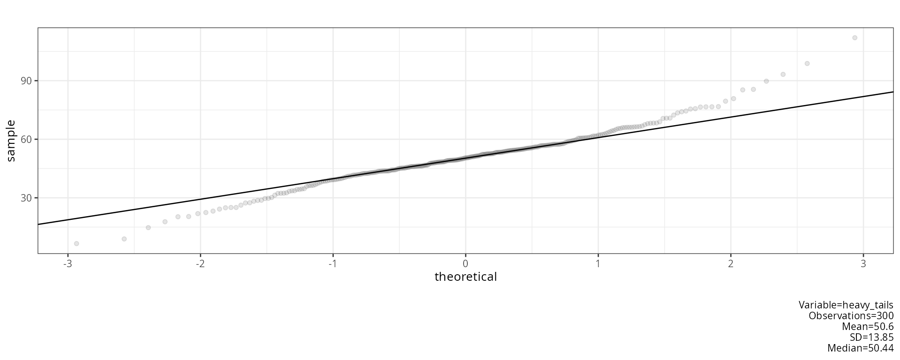
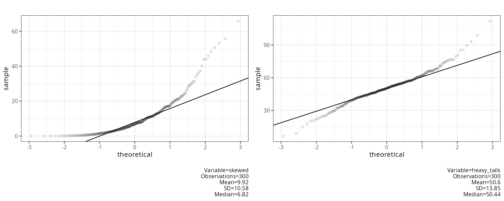
The right-skewed variable bends away from the line at the top; the heavy-tailed variable forms an S shape, with points below the line on the left and above it on the right.
plot_boxplot
All numeric variables as side-by-side boxplots on one plot.
ggplot2 draws the box from Q_1 to Q_3
with a line at M; whiskers reach the
most extreme values inside the fences and values outside are drawn as
points:
\left[Q_1-1.5\,IQR,\ \ Q_3+1.5\,IQR\right]
plot_boxplot(df = df, title = "Simulated data")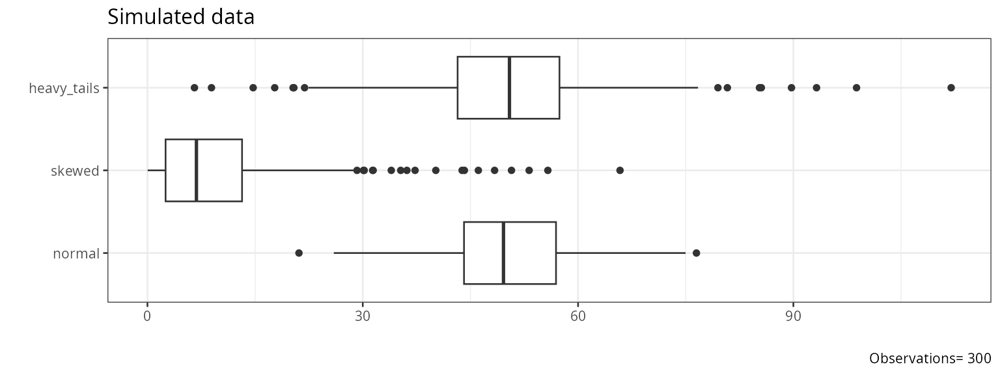
report_normality_tests
Runs eight normality tests on each variable. Each variable is first converted to z-scores, and variables with fewer than 8 or more than 4999 values are skipped. Small p values mean the data deviate from normality; with large samples even small, unimportant deviations give small p values.
report_normality_tests(df = df)## [1] "##################################################"
## [1] "NORMALITY TESTS"
## [1] "##################################################"
## [1] ""
## [1] "#########################"
## variable n statistic df p method alternative n.classes
## 1 normal 295 9.972825e-01 NA 9.060430e-01 Shapiro-Wilk normality test <NA> NA
## 2 normal 295 2.718761e-01 NA 9.576420e-01 Anderson-Darling test of goodness-of-fit <NA> NA
## 3 normal 295 5.050757e-02 NA 5.023404e-01 Cramer-von Mises normality test <NA> NA
## 4 normal 295 9.976499e-01 NA 9.079017e-01 Shapiro-Francia normality test <NA> NA
## 5 normal 295 1.472553e-01 2 9.290176e-01 Robust Jarque Bera Test <NA> NA
## 6 normal 295 4.067779e-02 NA 2.755917e-01 Lilliefors (Kolmogorov-Smirnov) normality test <NA> NA
## 7 normal 295 4.067779e-02 NA 7.134580e-01 Asymptotic one-sample Kolmogorov-Smirnov test two-sided NA
## 8 normal 295 1.530508e+01 17 5.735170e-01 Pearson chi-square normality test <NA> 20
## 9 skewed 300 7.899850e-01 NA 2.287367e-19 Shapiro-Wilk normality test <NA> NA
## 10 skewed 300 1.589933e+01 NA 2.000000e-06 Anderson-Darling test of goodness-of-fit <NA> NA
## 11 skewed 300 2.660485e+00 NA 7.370000e-10 Cramer-von Mises normality test <NA> NA
## 12 skewed 300 7.886278e-01 NA 7.775158e-17 Shapiro-Francia normality test <NA> NA
## 13 skewed 300 1.530339e+03 2 0.000000e+00 Robust Jarque Bera Test <NA> NA
## 14 skewed 300 1.749833e-01 NA 6.644600e-25 Lilliefors (Kolmogorov-Smirnov) normality test <NA> NA
## 15 skewed 300 1.749833e-01 NA 2.100843e-08 Asymptotic one-sample Kolmogorov-Smirnov test two-sided NA
## 16 skewed 300 1.869333e+02 17 1.192809e-30 Pearson chi-square normality test <NA> 20
## 17 heavy_tails 300 9.740061e-01 NA 2.937593e-05 Shapiro-Wilk normality test <NA> NA
## 18 heavy_tails 300 1.994873e+00 NA 9.247587e-02 Anderson-Darling test of goodness-of-fit <NA> NA
## 19 heavy_tails 300 3.432478e-01 NA 1.067328e-04 Cramer-von Mises normality test <NA> NA
## 20 heavy_tails 300 9.711620e-01 NA 2.863242e-05 Shapiro-Francia normality test <NA> NA
## 21 heavy_tails 300 8.216889e+01 2 0.000000e+00 Robust Jarque Bera Test <NA> NA
## 22 heavy_tails 300 7.338292e-02 NA 5.103346e-04 Lilliefors (Kolmogorov-Smirnov) normality test <NA> NA
## 23 heavy_tails 300 7.338292e-02 NA 7.902856e-02 Asymptotic one-sample Kolmogorov-Smirnov test two-sided NA
## 24 heavy_tails 300 3.453333e+01 17 7.160032e-03 Pearson chi-square normality test <NA> 20
## instruction
## 1 Shapiro-Wilk Composite null hypothesis: any normal distribution
## 2 Anderson-Darling Composite null hypothesis: any normal distribution
## 3 Cramer-von-Mises Composite null hypothesis: any normal distribution
## 4 Shapiro-Francia Composite null hypothesis: any normal distribution
## 5 Jarque-Bera Composite null hypothesis: any normal distribution
## 6 Lilliefors Composite null hypothesis: any normal distribution
## 7 Kolmogorov-Smirnov Exact null hypothesis: fully specified normal distribution
## 8 Pearson X2 Tests weaker null hypothesis: any distribution with the same probabilities for the given class intervals
## 9 Shapiro-Wilk Composite null hypothesis: any normal distribution
## 10 Anderson-Darling Composite null hypothesis: any normal distribution
## 11 Cramer-von-Mises Composite null hypothesis: any normal distribution
## 12 Shapiro-Francia Composite null hypothesis: any normal distribution
## 13 Jarque-Bera Composite null hypothesis: any normal distribution
## 14 Lilliefors Composite null hypothesis: any normal distribution
## 15 Kolmogorov-Smirnov Exact null hypothesis: fully specified normal distribution
## 16 Pearson X2 Tests weaker null hypothesis: any distribution with the same probabilities for the given class intervals
## 17 Shapiro-Wilk Composite null hypothesis: any normal distribution
## 18 Anderson-Darling Composite null hypothesis: any normal distribution
## 19 Cramer-von-Mises Composite null hypothesis: any normal distribution
## 20 Shapiro-Francia Composite null hypothesis: any normal distribution
## 21 Jarque-Bera Composite null hypothesis: any normal distribution
## 22 Lilliefors Composite null hypothesis: any normal distribution
## 23 Kolmogorov-Smirnov Exact null hypothesis: fully specified normal distribution
## 24 Pearson X2 Tests weaker null hypothesis: any distribution with the same probabilities for the given class intervals
## NULLShapiro-Wilk (Shapiro & Wilk, 1965). The weights a_i come from the expected values of normal order statistics; R computes W and its p value with Royston’s (1995) approximation:
W=\frac{\left(\sum_{i=1}^{n}a_i\,x_{(i)}\right)^2}{\sum_{i=1}^{n}(x_i-\bar{x})^2}
Anderson-Darling (Anderson & Darling, 1952), with F the distribution function of the null hypothesis:
A^2=-n-\frac{1}{n}\sum_{i=1}^{n}(2i-1)\left[\ln F\left(x_{(i)}\right)+\ln\left(1-F\left(x_{(n+1-i)}\right)\right)\right]
report_normality_tests calls
DescTools::AndersonDarlingTest with its default null
distribution, the uniform distribution on [0,1], so F(x)=x (see the method column).
For a test of normality F=\Phi.
Cramér-von Mises (Stephens, 1974). The p value uses the modified statistic W^2\left(1+\frac{0.5}{n}\right):
W^2=\frac{1}{12n}+\sum_{i=1}^{n}\left(\Phi\left(z_{(i)}\right)-\frac{2i-1}{2n}\right)^2
Shapiro-Francia (Shapiro & Francia, 1972). The squared correlation between the sorted data and approximate expected normal order statistics m_i; the p value uses Royston’s (1993) approximation:
W'=\operatorname{cor}\left(x_{(i)},m_i\right)^2,\qquad m_i=\Phi^{-1}\left(\frac{i-3/8}{n+1/4}\right)
Jarque-Bera. DescTools::JarqueBeraTest
computes the robust version (Gel & Gastwirth, 2008), which replaces
the standard deviation by a robust measure of spread J. With m_k=\frac{1}{n}\sum_{i=1}^{n}(x_i-\bar{x})^k:
RJB=\frac{n}{6}\left(\frac{m_3}{J^3}\right)^2+\frac{n}{64}\left(\frac{m_4}{J^4}-3\right)^2,\qquad J=\sqrt{\frac{\pi}{2}}\,\frac{1}{n}\sum_{i=1}^{n}\left|x_i-M\right|
The p value comes from the \chi^2 distribution with 2 degrees of freedom. The classic test (Jarque & Bera, 1987) uses JB=\frac{n}{6}\left(b_1^2+\frac{(b_2-3)^2}{4}\right) with b_1=m_3/m_2^{3/2} and b_2=m_4/m_2^2.
Lilliefors (Lilliefors, 1967). The largest distance between the empirical distribution and the normal distribution with the mean and SD estimated from the data; the p value uses the Dallal & Wilkinson (1986) approximation, and Stephens’ (1974) modified statistic when that approximation gives p>0.1:
D=\max_{i}\left\{\frac{i}{n}-\Phi\left(z_{(i)}\right),\ \Phi\left(z_{(i)}\right)-\frac{i-1}{n}\right\}
Kolmogorov-Smirnov (Kolmogorov, 1933; Smirnov, 1948). The same distance as Lilliefors:
D=\sup_x\left|F_n(x)-\Phi\left(\frac{x-\bar{x}}{s}\right)\right|
Its p value comes from the Kolmogorov distribution, which assumes the mean and SD are known in advance. Here they are estimated from the same data, which makes the p value too large; the Lilliefors test corrects for this, which is why the two rows have the same statistic but different p values.
Pearson \chi^2 (Pearson, 1900). The range is split into k classes that are equally likely under the fitted normal distribution, so each has expected count E_j=N/k, where N is the number of non-missing values. With O_j the observed count in class j:
P=\sum_{j=1}^{k}\frac{(O_j-E_j)^2}{E_j},\qquad k=\left\lceil2\,n^{2/5}\right\rceil,\qquad df=k-3
Here n is the number of rows of
df, including missing values (Moore, 1986). Two degrees of
freedom are subtracted for the estimated mean and SD.
With file, the results are also written to a
.log file and an .xlsx file in which p values
\le .05 are highlighted.
plot_outlier
One dot plot per numeric variable with outliers coloured and labelled
by row name. Dashed lines show the centre and the two cut-offs.
method selects the rule:
method |
Outlier when | Centre line |
|---|---|---|
"mean" |
\left\lvert x_i-\bar{x}\right\rvert>2s | \bar{x} |
"median" |
\left\lvert x_i-M\right\rvert>2\,\dfrac{MAD}{0.6745}, with MAD=\operatorname{median}_i\left\lvert x_i-M\right\rvert | M |
"boxplot" |
x_i<Q_1-1.5\,IQR or x_i>Q_3+1.5\,IQR | M |
Dividing the MAD by 0.6745 \left(=\Phi^{-1}(0.75)\right) makes it estimate the standard deviation for normal data (Leys et al., 2013). The mean and SD are pulled towards outliers themselves, so the median and boxplot rules are more robust. The plots below apply the three rules to the first 100 cases of the skewed variable.
skewed <- df$skewed[1:100]
invisible(plot_multiplot(plotlist = c(plot_outlier(df = skewed, method = "mean", title = "mean"),
plot_outlier(df = skewed, method = "median", title = "median"),
plot_outlier(df = skewed, method = "boxplot", title = "boxplot")),
cols = 3))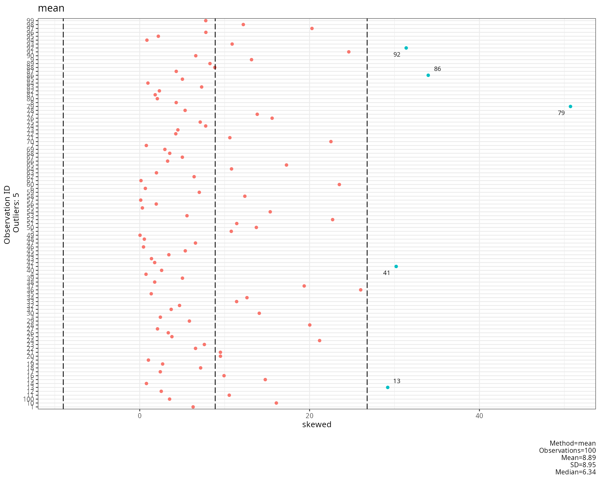
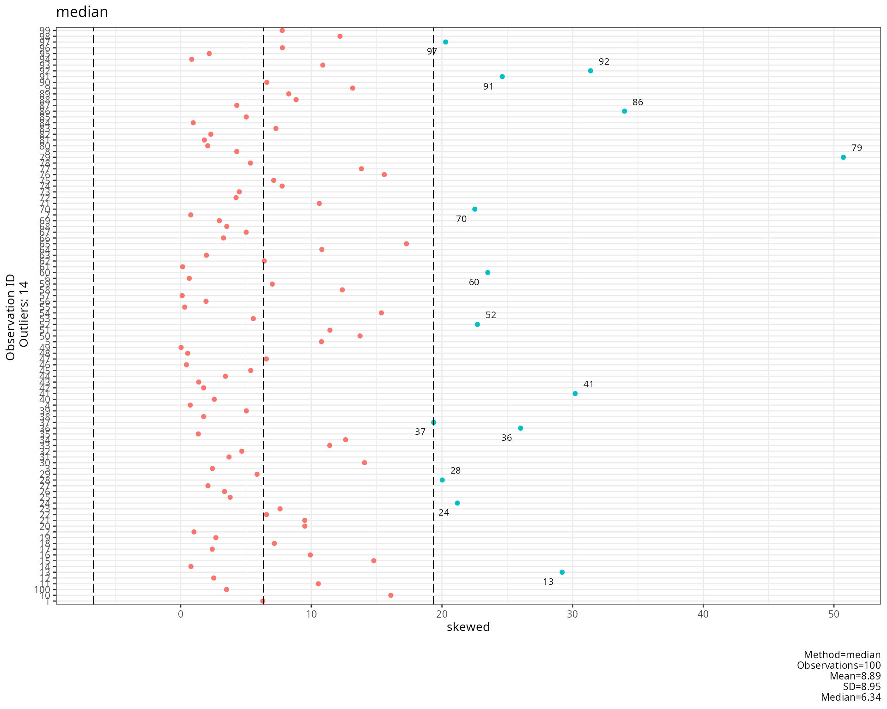
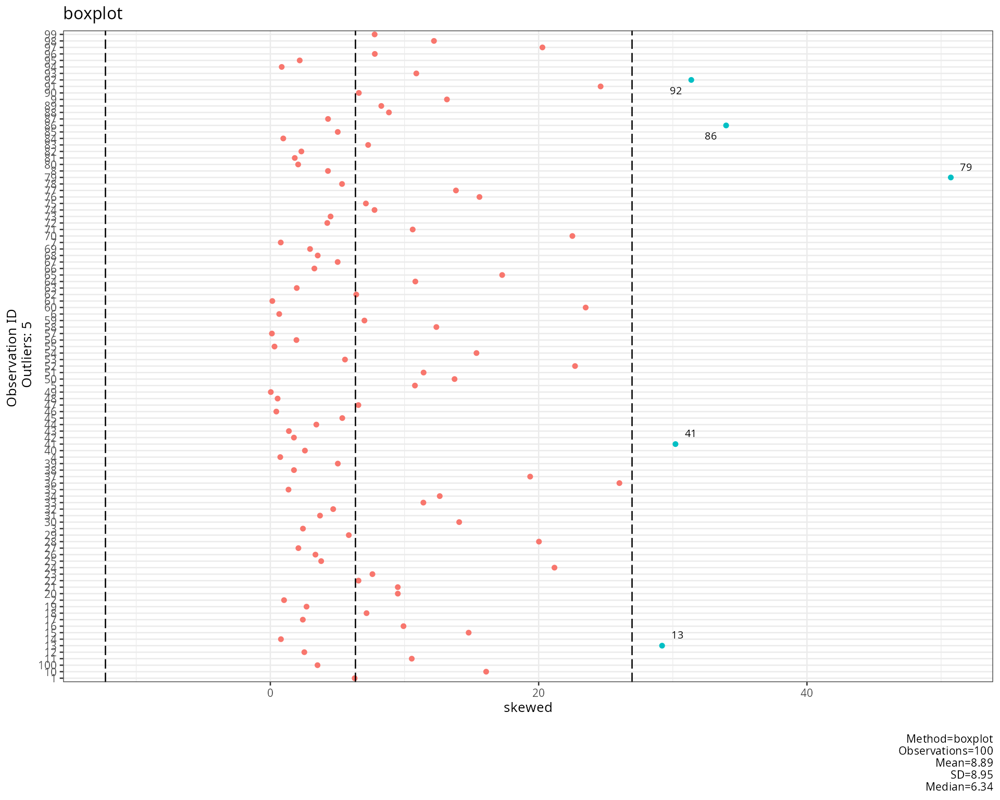
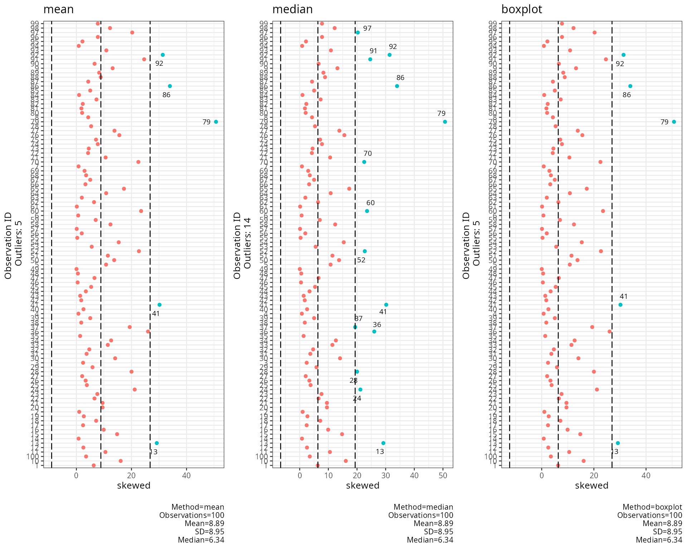
outlier_summary
Converts the variable to z-scores and reports the percentage of non-missing values beyond three cut-offs:
\text{percent}_c=100\cdot\frac{1}{n}\sum_{i=1}^{n}\mathbf{1}\left[\lvert z_i\rvert\ge c\right],\qquad c\in\{1.96,\ 2.58,\ 3.29\}
For normal data about 100\cdot2\left(1-\Phi(c)\right) percent are expected: 5%, 1% and 0.1%. Clearly larger percentages point to heavy tails or outliers (Tabachnick & Fidell, 2013).
data.frame(t(sapply(df, outlier_summary)))## abs_z_1.96 abs_z_2.58 abs_z_3.29
## normal 5.76 % 0.68 % 0 %
## skewed 5 % 3.33 % 2 %
## heavy_tails 5.67 % 2.33 % 0.67 %remove_outliers
Replaces values outside the fences with NA. With
probs =(p_1,p_2):
x_i'=\begin{cases}\text{NA} & x_i<Q_{p_1}-1.5\,IQR\ \text{ or }\ x_i>Q_{p_2}+1.5\,IQR\\ x_i & \text{otherwise}\end{cases}
IQR is always Q_{0.75}-Q_{0.25}, whatever
probs is; with the default
probs = c(0.25, 0.75) these are the boxplot fences (Tukey,
1977).
cleaned <- data.frame(sapply(df, remove_outliers))
data.frame(missing_before = colSums(is.na(df)),
missing_after = colSums(is.na(cleaned)))## missing_before missing_after
## normal 5 7
## skewed 0 18
## heavy_tails 0 15References
Anderson, T. W., & Darling, D. A. (1952). Asymptotic theory of certain “goodness of fit” criteria based on stochastic processes. The Annals of Mathematical Statistics, 23(2), 193–212. https://doi.org/10.1214/aoms/1177729437
Dallal, G. E., & Wilkinson, L. (1986). An analytic approximation to the distribution of Lilliefors’s test statistic for normality. The American Statistician, 40(4), 294–296. https://doi.org/10.1080/00031305.1986.10475419
Gel, Y. R., & Gastwirth, J. L. (2008). A robust modification of the Jarque-Bera test of normality. Economics Letters, 99(1), 30–32. https://doi.org/10.1016/j.econlet.2007.05.022
Jarque, C. M., & Bera, A. K. (1987). A test for normality of observations and regression residuals. International Statistical Review, 55(2), 163–172. https://doi.org/10.2307/1403192
Kolmogorov, A. N. (1933). Sulla determinazione empirica di una legge di distribuzione. Giornale dell’Istituto Italiano degli Attuari, 4, 83–91.
Leys, C., Ley, C., Klein, O., Bernard, P., & Licata, L. (2013). Detecting outliers: Do not use standard deviation around the mean, use absolute deviation around the median. Journal of Experimental Social Psychology, 49(4), 764–766. https://doi.org/10.1016/j.jesp.2013.03.013
Lilliefors, H. W. (1967). On the Kolmogorov-Smirnov test for normality with mean and variance unknown. Journal of the American Statistical Association, 62(318), 399–402. https://doi.org/10.1080/01621459.1967.10482916
Moore, D. S. (1986). Tests of chi-squared type. In R. B. D’Agostino & M. A. Stephens (Eds.), Goodness-of-fit techniques (pp. 63–95). Marcel Dekker.
Pearson, K. (1900). On the criterion that a given system of deviations from the probable in the case of a correlated system of variables is such that it can be reasonably supposed to have arisen from random sampling. The London, Edinburgh, and Dublin Philosophical Magazine and Journal of Science, 50(302), 157–175. https://doi.org/10.1080/14786440009463897
Royston, P. (1993). A pocket-calculator algorithm for the Shapiro-Francia test for non-normality: An application to medicine. Statistics in Medicine, 12(2), 181–184. https://doi.org/10.1002/sim.4780120209
Royston, P. (1995). Remark AS R94: A remark on algorithm AS 181: The W-test for normality. Journal of the Royal Statistical Society: Series C (Applied Statistics), 44(4), 547–551. https://doi.org/10.2307/2986146
Shapiro, S. S., & Francia, R. S. (1972). An approximate analysis of variance test for normality. Journal of the American Statistical Association, 67(337), 215–216. https://doi.org/10.1080/01621459.1972.10481232
Shapiro, S. S., & Wilk, M. B. (1965). An analysis of variance test for normality (complete samples). Biometrika, 52(3–4), 591–611. https://doi.org/10.1093/biomet/52.3-4.591
Silverman, B. W. (1986). Density estimation for statistics and data analysis. Chapman & Hall.
Smirnov, N. (1948). Table for estimating the goodness of fit of empirical distributions. The Annals of Mathematical Statistics, 19(2), 279–281. https://doi.org/10.1214/aoms/1177730256
Stephens, M. A. (1974). EDF statistics for goodness of fit and some comparisons. Journal of the American Statistical Association, 69(347), 730–737. https://doi.org/10.1080/01621459.1974.10480196
Sturges, H. A. (1926). The choice of a class interval. Journal of the American Statistical Association, 21(153), 65–66. https://doi.org/10.1080/01621459.1926.10502161
Tabachnick, B. G., & Fidell, L. S. (2013). Using multivariate statistics (6th ed.). Pearson.
Tukey, J. W. (1977). Exploratory data analysis. Addison-Wesley.
Wilk, M. B., & Gnanadesikan, R. (1968). Probability plotting methods for the analysis of data. Biometrika, 55(1), 1–17. https://doi.org/10.1093/biomet/55.1.1